Parada 2 de 5
Infraestructura comunitaria
Barrio popular de Berazategui
Todo lo que TECHO mejora en el barrio más allá de la vivienda individual: veredas, escaleras, caminos, plazas, comedores y salones comunitarios. Estas obras se deciden junto a los vecinos en mesas de trabajo barrial, no se imponen desde afuera.
- DuraciónUn día de obra
- Horario8:30 a 17 h aprox.
- AccesoCon inscripción previa
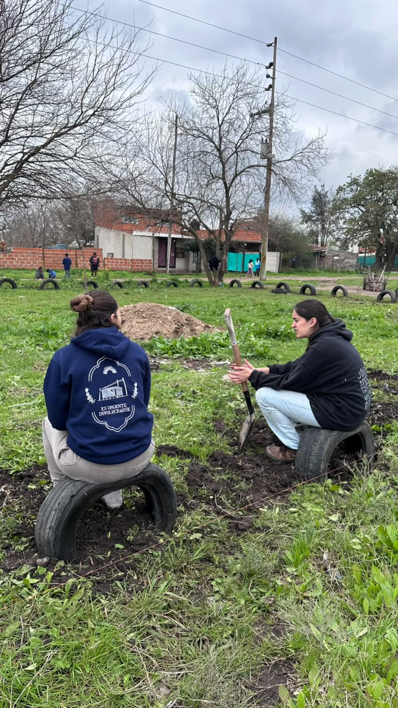
Qué vas a conocer
- Que el barrio también se construye: veredas, escaleras, caminos, plazas, comedores y salones comunitarios mejoran la vida de todos los vecinos, no de una sola familia.
- Que las obras se deciden en mesas de trabajo barrial junto a los vecinos, según lo que el barrio necesita.
- El alcance: en 2023, TECHO construyó más de 1.500 metros de veredas en 25 barrios y ejecutó 240 proyectos comunitarios en todo el país.
Fuente de las cifras: TECHO Argentina, Reporte 2023.
Actividades y experiencias
- Construir un tramo de vereda de acceso: preparar el terreno, armar la malla de hierro y colar el cemento.
- Armar un espacio recreativo con materiales reciclados, como neumáticos en desuso enterrados para delimitar sectores de juego.
- Trabajar codo a codo con los vecinos que participan de la mesa de trabajo y conocer para qué se va a usar la obra.
Fotos de la jornada
Veredas de acceso
Encofrado, malla de hierro y colado de cemento para construir veredas de acceso en un barrio popular. Trabajo en equipo, con herramientas simples y mucha mano de obra, transportando arena, piedra y cemento hasta el lugar.
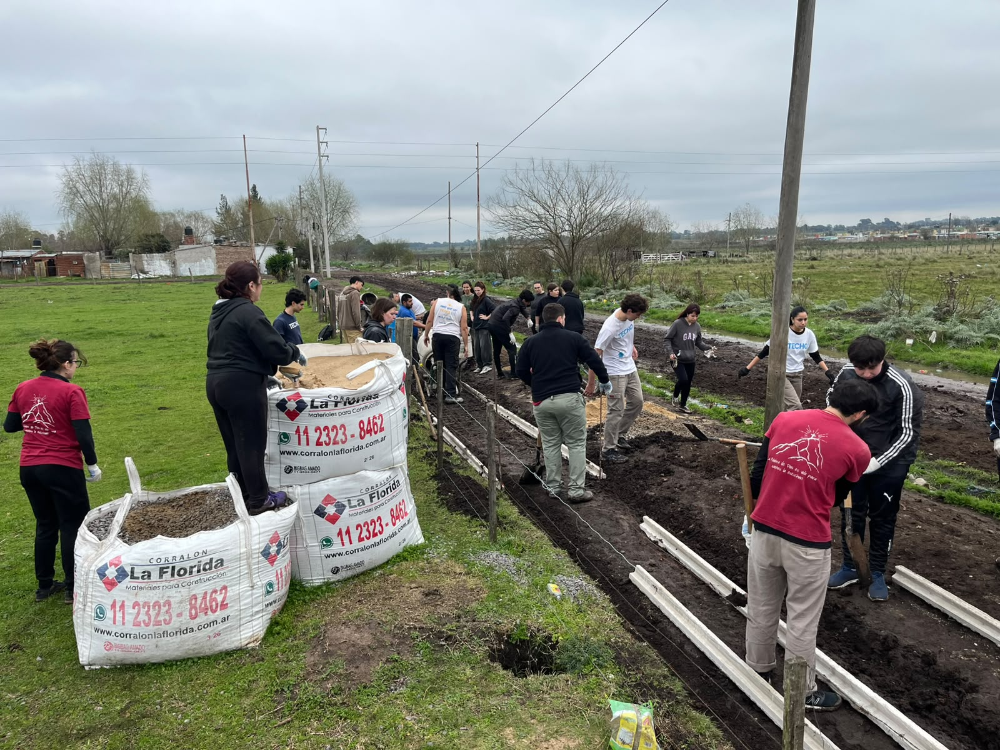
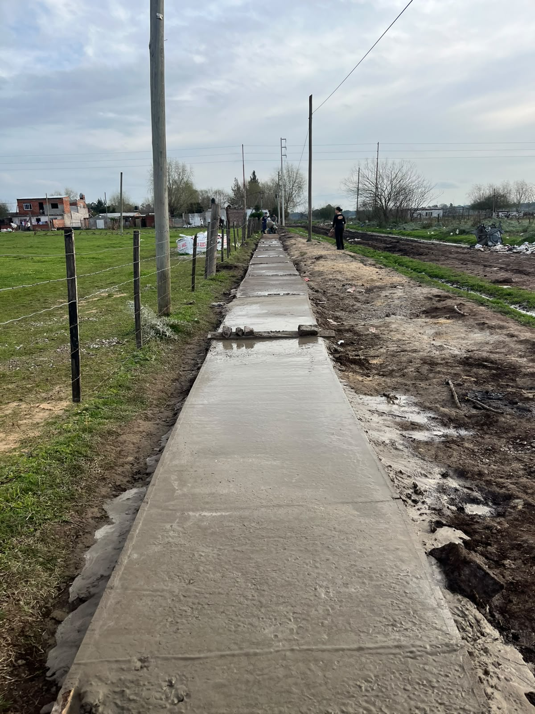
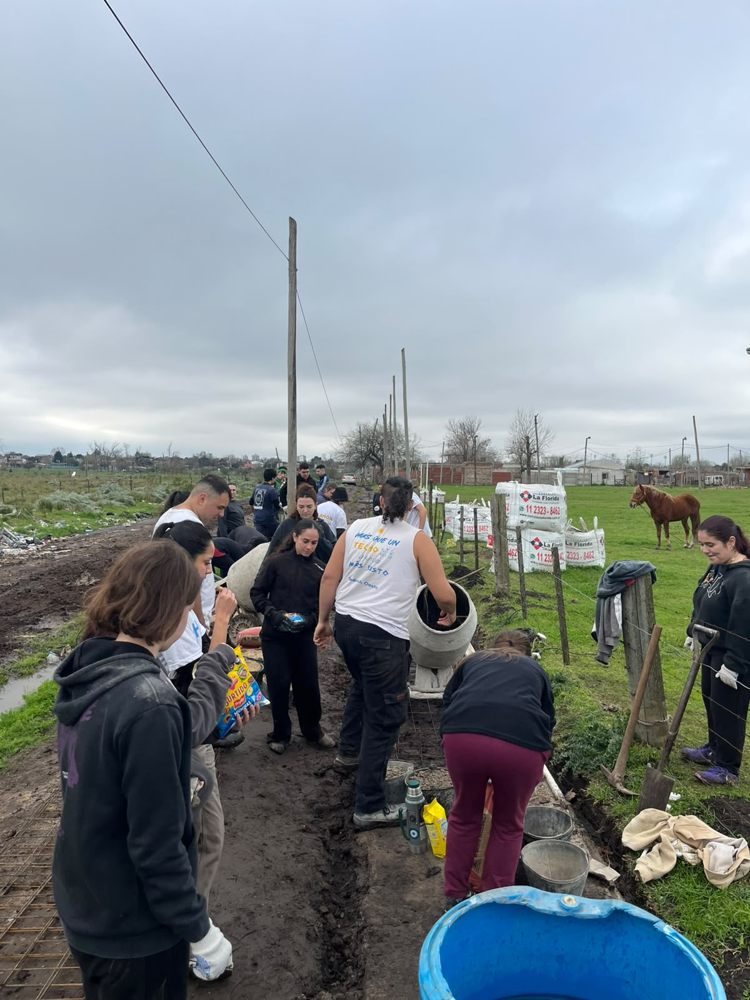
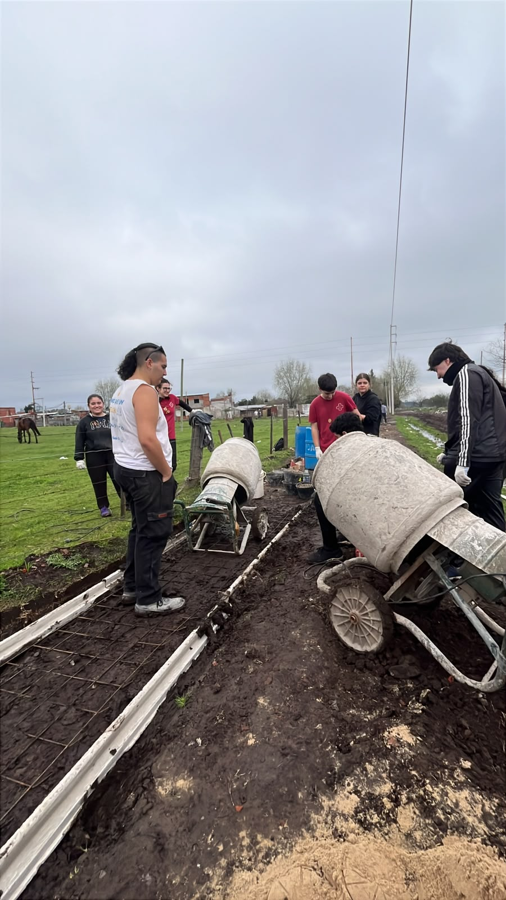
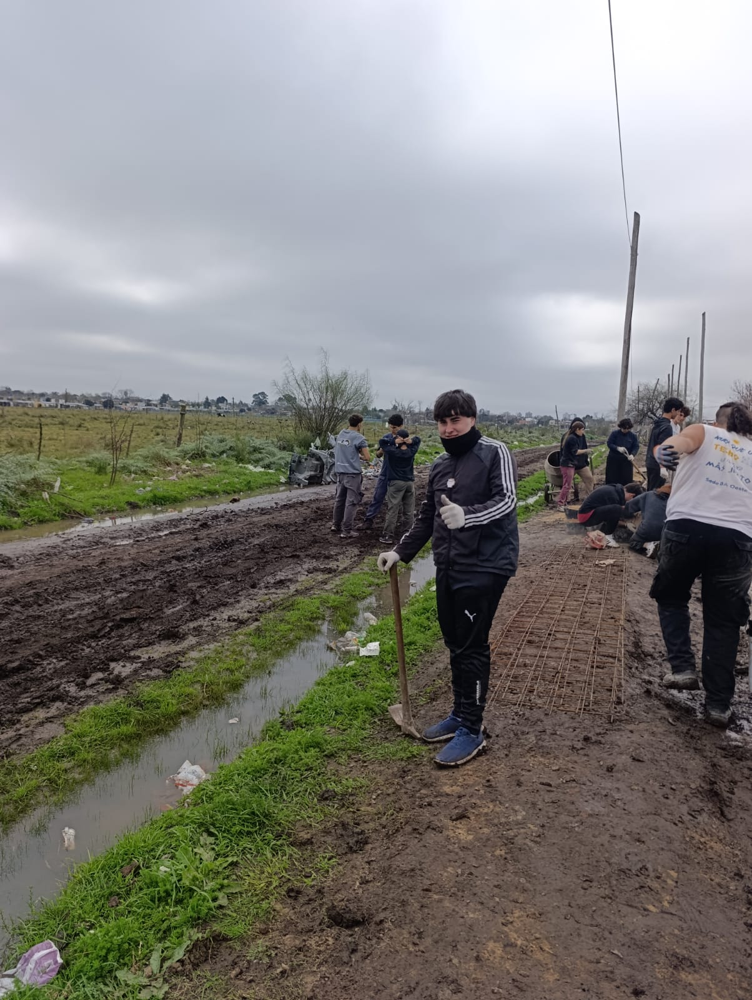
Espacio recreativo con neumáticos
Armado de una plaza comunitaria utilizando neumáticos en desuso: cavamos pozos para enterrarlos parcialmente y así delimitar sectores de juego y recreación, aprovechando materiales reciclados para generar un espacio comunitario a bajo costo.
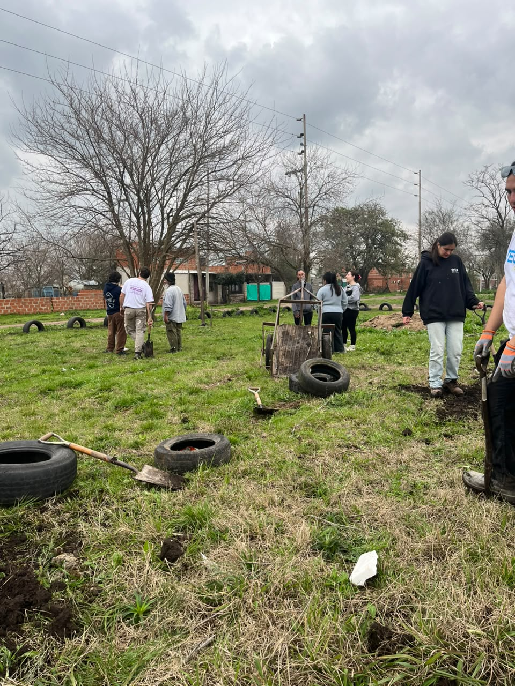
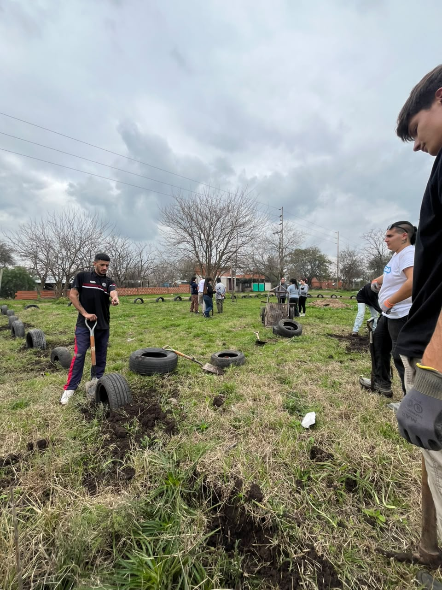
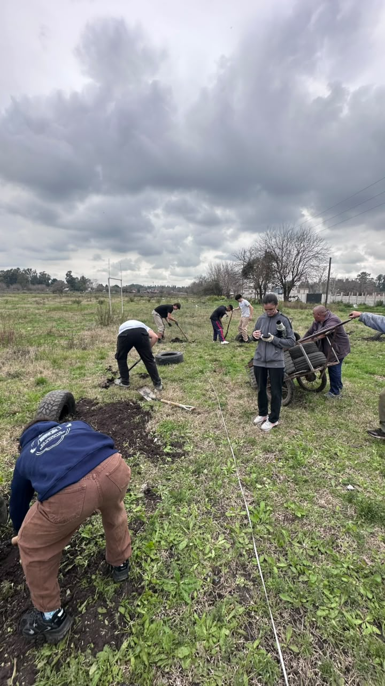
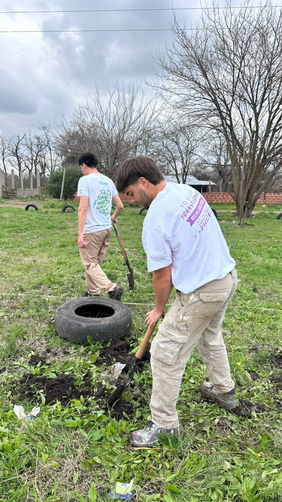
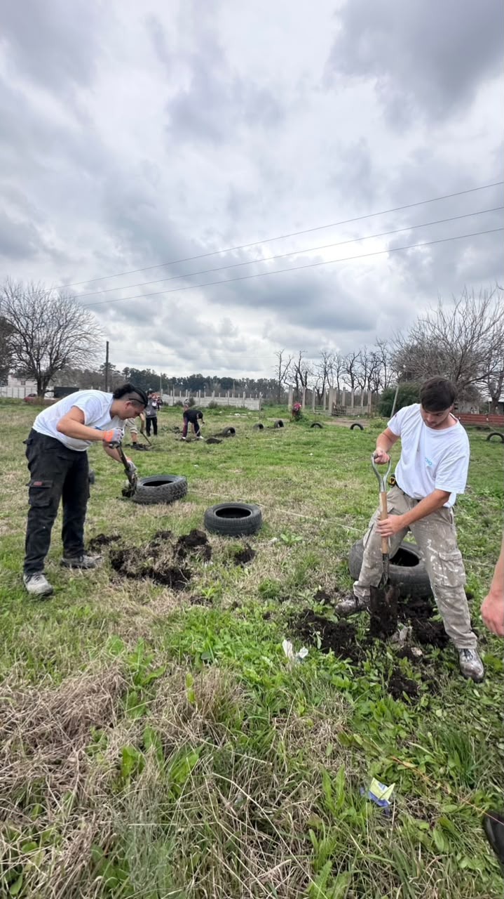
Recomendaciones para el visitante
Llevá ropa que se pueda ensuciar y calzado cerrado: se trabaja con cemento, arena y barro.
Si tenés guantes de trabajo, traelos. Sumá protector solar y agua propia.
Es trabajo físico: se carga material y se usan palas y carretillas. Si tenés alguna limitación, consultalo con la sede antes de la jornada.
¿Te sumás a esta jornada?
Elegí la fecha y calculá tu aporte en un minuto.
Inscribite a esta jornada